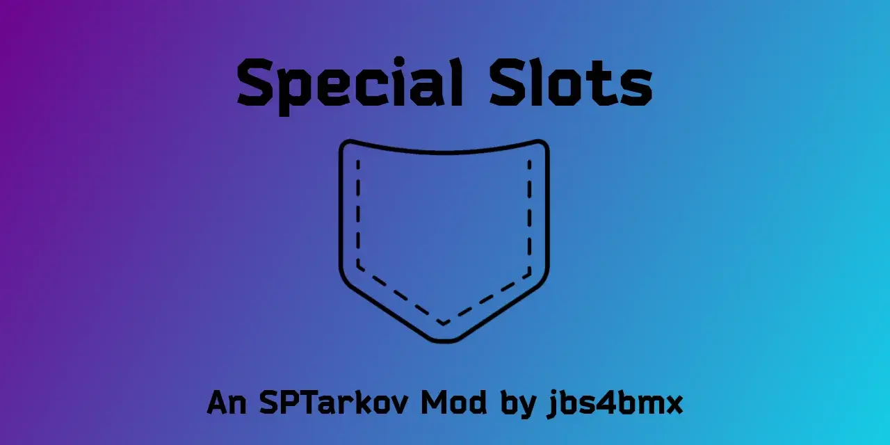

Special Slots
- Downloads
- 6,852
- Favourites
- 11
- Mod lists
- 19

This mod lets you carry non-special items in the Special Slots.
It is configurable so you can use it with the default setting of allowing everything, or you can limit it to specific item categories that can take advantage of the special slots.
Configuration:
IMPORTANT! If configuring the load order of your mods, make sure that SVM is loaded before this mod, otherwise, this mod may not work as intended.
Pro/Con List:
- PRO - Special Slots can hold anything including containers. Carrying containers in Special Slots will allow you to carry much more. (Maybe a little too OP?)
- PRO - Special Slots retain everything after death, unless those items are insured.
- CON - Special Slots cannot hold stacks of objects such as Ammo unless they are in a container. (There’s no ETA for a fix for this “feature”.)
- CON - Insurance - Containers/Weapons/Items placed into Special Slots that have been insured will go through the insurance process upon your death. For example; if you have an insured container full of awesome loot in a Special Slot when you die, then you loose the loot and the container is subject to the insurance process.
Incompatibilities:
-- SVM --
- While it is not necessarily incompatible, there are some stipulations to using this mod along with SVM.
- Special Slots are only visible when using a 1 cell width for each of the 4 pockets.
- Changes to the number of pocket columns can remove some or all Special Slots. That is NOT a side-effect of this mod.
- Exception: Using only 3 or less pockets, you can expand them horizontally so long as they don’t total more than 4 wide.
- For example; if you increase the width of your pockets to 2 cells each, then this will “push” Special Slots off screen (technically under your inventory box) and you will not be able to use them.
-- SPT-ProfileEditor --
- Setting Pockets to anything more than 4 wide (adding columns), will remove the Special slots.
- Example: Setting pocket count to (10) or (15) will cause you to lose your Special slots.
- 10 = 5 columns x 2 rows
- 15 = 5 columns x 3 rows
- Example: Setting pocket count to (10) or (15) will cause you to lose your Special slots.
- The options with counts of (4) for columns do not remove the Special slots.
-- FIKA --
- Sorry, but I won’t be able to add .
Extract the contents of the zip file to the “root” of your SPT folder.
- The same location as ‘EscapeFromTarkov.exe’.
Edit the configuration file to your desired state.
Step 1: Delete the “SpecialSlots-Client.dll” file from the “[SPT]/BepInEx/plugins” folder.
Step 2: Delete ‘SpecialSlots’ folder from the “[SPT]/user/mods” folder.
Compatibility with other mods is neither expressed nor implied. (Attempts will be made to correct this, but cannot be guaranteed.)
Support is neither expressed nor implied. (There is no guarantee of expedited or resultant service.)
Support is definitely NOT given to earlier versions of the mod.
If you would like to report an issue or make feature suggestions, please do so on Github
This is definitely not required and you have every right to ignore this tab, but if you would still like to buy me a coffee, I’d greatly appreciate it. Any and all proceeds will go towards further development/maintenance of mods.
Version
4.0.2
Fix - Correct issue causing NullReferenceException errors to spam error log of game client.